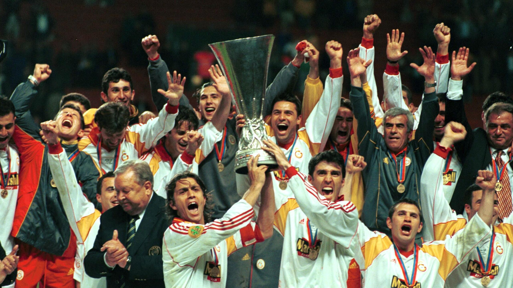
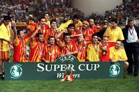

About Me: Background & Qualifications
I am Ruhay Naghili, an Electrical Engineering student at ADA University. I am passionate about learning new skills, exploring technology, and improving my academic writing. I am a fan of Galatasaray SK.
Qualifications and Skills
- Programming Languages: HTML, Python
- Design Tools: Basic knowledge of Canva, PowerPoint
- Languages: Azerbaijani (Native), English (Advanced)
Activities and Interests
In addition to my studies, I enjoy working on creative projects, developing websites, and expanding my vocabulary every day. My goal is to continue growing both personally and professionally while taking on new challenges and opportunities.

